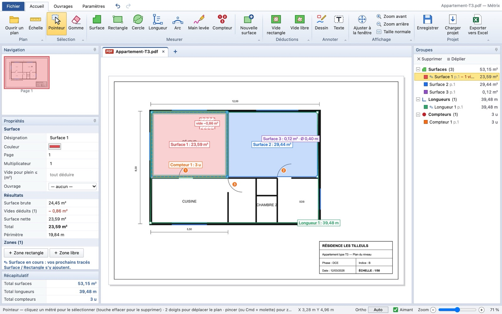
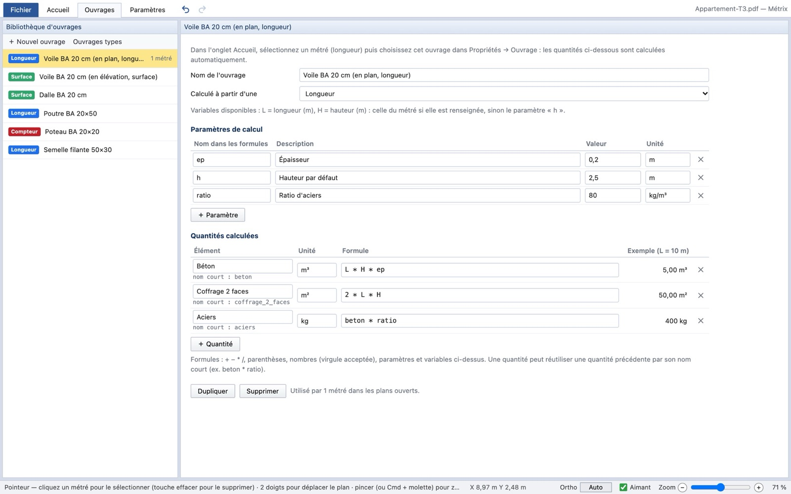
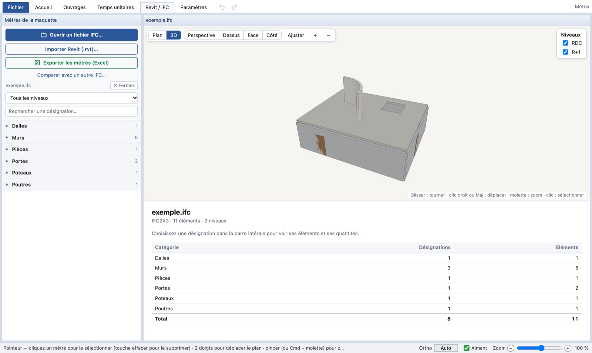

Mesurez surfaces, longueurs et quantités directement sur vos plans PDF, calculez béton, coffrage et aciers, et lisez vos maquettes Revit en 3D. Gratuit, sans inscription.

Pensé pour les conducteurs de travaux, métreurs et économistes : rapide sur chantier comme au bureau.
Ouvrez vos plans PDF (plusieurs pages), JPG ou PNG. L'échelle écrite sur le plan est détectée automatiquement.
Polygones, rectangles, cercles, arcs, main levée, compteurs. Vides à déduire, multiplicateurs, regroupement par catégorie.
Associez un métré à un ouvrage (voile, dalle, poutre, semelle…) : béton, coffrage et aciers sont calculés avec vos propres formules.
Ouvrez un IFC exporté de Revit (ou un .rvt avec le convertisseur gratuit DDC) : quantités par catégorie, vue en plan et 3D aux couleurs de Revit.
Exportez tous vos métrés et les quantités de vos maquettes dans un classeur Excel prêt à l'emploi.
Les nouvelles versions s'installent toutes seules au lancement. Rien à retélécharger.
Une interface claire, à onglets, comme les logiciels que vous connaissez déjà.
Réglez l'échelle, choisissez l'outil, cliquez les sommets : la surface, le périmètre et les vides déduits s'affichent aussitôt.

Une bibliothèque d'ouvrages types (voiles, dalles, poutres, poteaux, semelles) à adapter : épaisseur, hauteur, ratio d'aciers…
Tous les éléments de la maquette, classés par catégorie et désignation, avec leurs quantités. Vue en plan niveau par niveau ou vue 3D.

Gratuit, sans inscription et sans publicité.
macOS 12 (Monterey) ou plus récent, Mac Intel et Apple Silicon (M1 à M4).
Télécharger pour MacMetrix-Mac.zip · 3,9 MoWindows 10 ou 11. Utilise Microsoft Edge (déjà installé) ou Google Chrome.
Télécharger pour WindowsMetrix-Windows.zip · 3,4 MoVersion web : ouvrez-la dans Safari puis « Partager → Sur l'écran d'accueil » pour l'utiliser comme une app.
Ouvrir la version webRien à installerVersion actuelle : 3.28 du 20 novembre 2026. Guides illustrés : Mac (PDF) · Windows (PDF)
Métrix n'est pas distribué par l'App Store ni le Microsoft Store : au premier lancement, votre ordinateur demande une confirmation. C'est normal et à faire une seule fois.
Oui : téléchargement libre, sans inscription, sans publicité et sans limite d'utilisation.
Non. Plans, métrés et maquettes sont lus et enregistrés sur votre ordinateur uniquement. Internet ne sert qu'à vérifier s'il existe une nouvelle version.
Non, Métrix fonctionne hors ligne. Sur iPhone et iPad, la version web reste disponible hors ligne une fois ajoutée à l'écran d'accueil.
Automatiquement : Métrix vérifie au lancement s'il existe une mise à jour et l'installe tout seul. Vous n'avez rien à retélécharger.
Mac et Windows avertissent pour toute application téléchargée hors de leurs boutiques officielles. Suivez les étapes d'installation ci-dessus : la confirmation n'est demandée qu'une fois.
Plans PDF (plusieurs pages), images JPG et PNG, maquettes IFC (IFC2x3 et IFC4) et fichiers Revit .rvt avec le convertisseur DDC. Un projet regroupe plusieurs PDF et leurs métrés dans un seul fichier .metrix, que vous pouvez rouvrir sur un autre ordinateur ou partager.